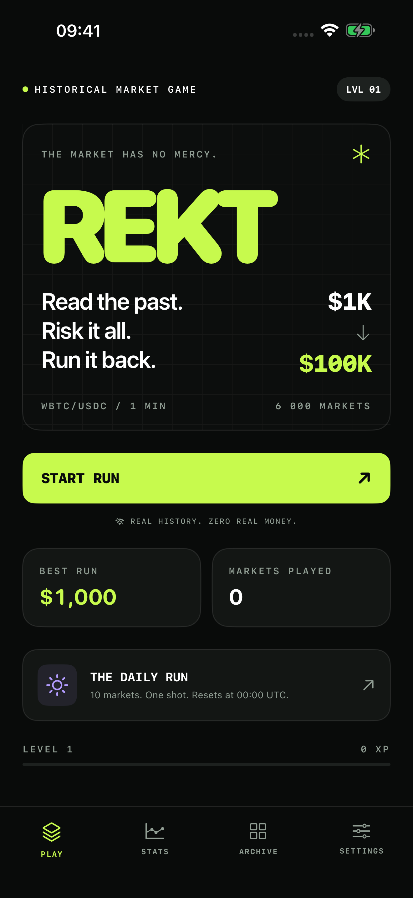
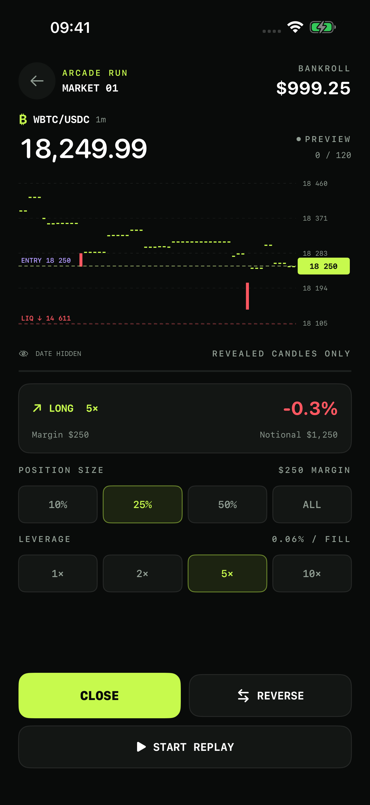
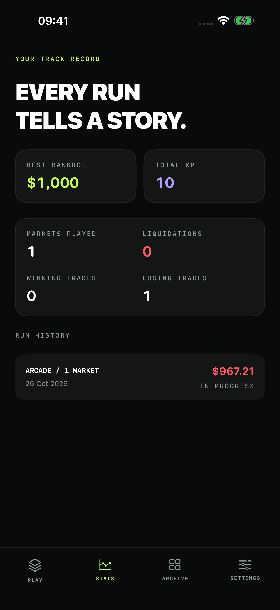

The date stays hidden.
Choose LONG or SHORT as historical candles unfold. Close or reverse a position using only the prices already revealed. The date appears when that market ends.
Start with a virtual $1,000. Carry it from market to market toward $100,000. Pick upgrades that change the tools you can use, then face historical volatility bosses.
Real history. Zero real money.
See how a run unfoldsFree · No ads or purchases · App Store release in preparation

A market lasts about 24 seconds at normal speed. Your bankroll carries into the next one. Win, lose, pay the fees, and decide how much of the surviving balance to risk next.
Choose LONG or SHORT as historical candles unfold. Close or reverse a position using only the prices already revealed. The date appears when that market ends.
In Arcade, choose one upgrade from the offered options: reveal volume, add chart context, unlock indicators or change your risk controls. Your selection lasts for this run.
Arcade boss rounds draw from a separate set of extreme historical markets. Keep the run alive, uncover the date and add the encounter to your discoveries.

Volume Vision reveals volume. More Context expands the visible history. Trend Lens and Momentum Radar unlock indicators. Risk Manager and Take Profit add exit controls. Fee Discount and Precision Size change how you manage the virtual balance.
You choose between the upgrades offered after each third market. Their usefulness depends on how you play; they do not change the recorded prices.
A continuous bankroll, upgrade choices and volatility bosses. Try to turn the starting $1,000 into $100,000 without being liquidated.
Play without perks. Concentrate on the historical chart, your entries and exits, and the balance you carry forward.
Ten deterministic markets and one local official attempt per UTC day. Your attempt and result are stored on this device; there is no online leaderboard.

Leaving the app pauses the replay. Return to Continue Run and pick up your active game. Stats records bankroll, wins, losses, liquidations and XP; the archive keeps your discoveries.
The game saves locally. There is no account or cloud sync, and deleting the app or resetting progress can erase your saves.
The included pack contains 6,000 episodes of WBTC/USDC history. WBTC is wrapped Bitcoin and USDC is a dollar-linked token. We aggregate minute candles from Ethereum pool prices at the end of completed blocks, using AWS Public Blockchain Data and its published license. Minutes with no swaps carry the prior close and zero volume. These prices can differ from Bitcoin on other markets.
Historical episodes are bundled for offline gameplay. The market rules, fees and leverage are simplified for the game.
English interface · iOS 17 or later · iPhone portrait · No account, ads, subscriptions or in-app purchases.